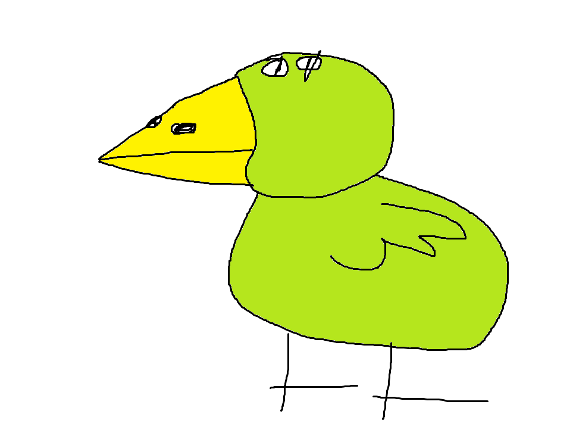

Vennard est le Canard Vent. Il est de type Support et ses compétences de soutient soutiendront votre équipe tout le long de la partie!
Compétences :
Comp. 1 : Charge! : Fonce sur un ennemis avec 25% de chances de l'assomer.
Comp. 2 : Veinard : Soigne un allié de 50% de tes PV Max et donne lui l'immunité. Tour de temps de pause : 2 tours.
Comp. 3 : Chance du canard : Réanime un allié avec 50% de ses PV Max et 100% de sa jauge d'attaque. Tour de temps de pause : 5 tours.
